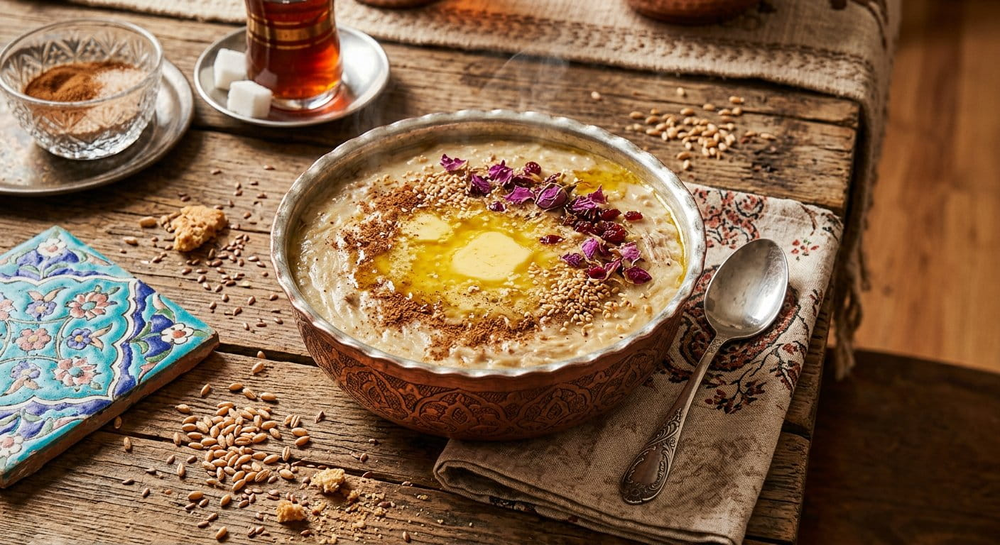
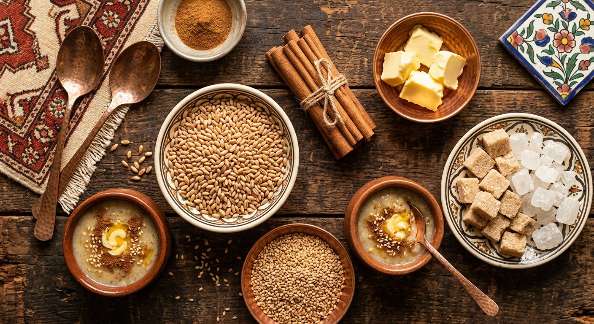

حلیم سنتی تازه با پخت روزانه و بدون هیچ نگهدارنده
✦ برکت از گندم، طعم از سنت ✦

اگر به دنبال حلیم تازه با پخت روزانه و طعم سنتی هستید، حلیم سبحان در اردبیل هر روز تازه آماده میشود.

حلیم سبحان در اردبیل با گندم سبوسدار، پخت آهسته و مواد اولیه تازه تهیه میشود. هر کاسه حلیم همراه با کره طبیعی، کنجد، شکر و دارچین سرو میشود.
اگر برای سفارش حلیم در اردبیل دنبال یک گزینه تازه و روزانه هستید، حلیم سبحان در خیابان مالک اشتر آماده سفارش تلفنی و آنلاین است.
نوش جان با طعم خونه
حلیم سبحان با الهام از دستپختهای اصیل ایرانی و با استفاده از گندم سبوسدار مرغوب تهیه میشود. هر کاسه حلیم ما، حاصل ساعتها پخت آهسته و عشق به آشپزی سنتی است.
استفاده از بهترین گندم سبوسدار برای طعم و کیفیت بینظیر
کره محلی تازه که طعم حلیم را دوچندان میکند
کاملاً طبیعی و بدون هرگونه مواد نگهدارنده و افزودنی شیمیایی
هر روز صبح تازه پخته میشود تا بهترین کیفیت را تجربه کنید
دارچین، کنجد، شکر و کره – ترکیبی بینظیر از طعمها
بیش از یک دهه تجربه در تهیه حلیم سنتی و اصیل ایرانی
حلیم سبحان طعمی بهیادماندنی از صبحانههای سنتی ایرانی را به شما هدیه میدهد. همان طعمی که مادربزرگها با عشق درست میکردند.
پاسخ به سوالات رایج درباره حلیم سبحان و طریقه سفارش
حلیم سبحان یک غذای سنتی و اصیل ایرانی است که از گندم سبوسدار درجه یک تهیه میشود. این حلیم با پخت آهسته و طولانی، همراه با کره طبیعی، دارچین و کنجد، طعم و بافتی منحصر به فرد پیدا میکند. حلیم سبحان در اردبیل هر روز تازه پخته میشود و بدون هیچ مادهٔ نگهدارنده یا افزودنی شیمیایی است.
برای سفارش حلیم سبحان میتوانید با شماره تلفن ۰۹۱۴۹۸۸۹۸۰۵ تماس بگیرید. ما در خیابان مالک اشتر، اردبیل قرار داریم و سفارشات را هر روز تحویل میدهیم.
بلی، حلیم سبحان کاملاً طبیعی و سالم است. ما در تهیهٔ این حلیم از مواد اولیهٔ خالص استفاده میکنیم و هیچ مادهٔ نگهدارنده، رنگدهندهٔ مصنوعی یا افزودنیٔ شیمیایی به آن اضافه نمیکنیم. تنها گندم، کره، دارچین و کنجد طبیعی در حلیم سبحان وجود دارد.
بلی، حلیم سبحان هر روز صبح زود تازه پخته میشود. ما اعتقاد داریم که حلیم تازه بهترین طعم و کیفیت را دارد. با پخت روزانه، مطمئن میشویم که مشتریان ما همیشه حلیمی تازه، داغ و دلچسب دریافت میکنند.
هر پیمانهٔ حلیم سبحان با مخلفات ویژهٔ ما سرو میشود: کره طبیعی، کنجد سفید، شکر و دارچین معطر. این مخلفات طعم حلیم را بهتر میکند و تجربهٔ غذایی را لذیذتر و خوشطعمتر میسازد. مخلفات ما همگی خالص و درجهٔ یک هستند.
حلیم سبحان از بهترین و درجهٔ یکِ مواد اولیه تهیه میشود. گندم سبوسدار، کره محلی و خالص، دارچین معطر، کنجد خالص و شکر ریز. ما مواد اولیه را با دقت انتخاب میکنیم تا اطمینان حاصل کنیم که حلیم سبحان بهترین طعم و کیفیت را داشته باشد.
حلیم سبحان بهترین طعم را وقتی تازه و داغ است دارد. اگر نخواستید بلافاصله بخورید، میتوانید حلیم را در ظرف محکم بستهشدهٔ درون یخچال تا ۲۴ ساعت نگهداری کنید. قبل از مصرف، آن را بر روی شعلهٔ آتش گرم کنید تا دوباره طعم اصلیاش بازگردد.
حلیم سبحان یک غذای سنتی و مقوی است که برای تمام سنین مناسب است. کودکان، نوجوانان و بزرگسالان همگی میتوانند از حلیم سبحان بهرهمند شوند. این غذا منبع خوبی از کربوهیدرات و پروتئین است و انرژی بخش برای روز شما میشود.
برای سفارش، دریافت آدرس و اطلاعات بیشتر با حلیم سبحان تماس بگیرید.